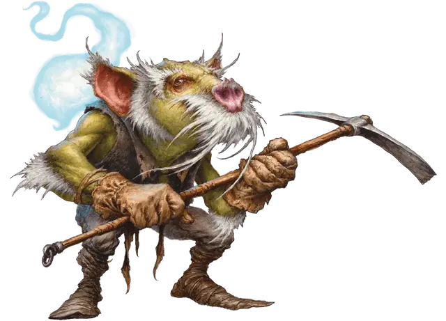

Бригганок
Brigganock
Крошечная Фея, нейтрально-добрая

Класс Доспеха 12
Хиты 9 (2к4 + 4)
Скорость 15 футов
| мод | спас | ||
|---|---|---|---|
| СИЛ | 4 | −3 | −3 |
| ЛОВ | 15 | +2 | +4 |
| ТЕЛ | 14 | +2 | +4 |
| мод | спас | ||
|---|---|---|---|
| ИНТ | 10 | +0 | +0 |
| МДР | 11 | +0 | +0 |
| ХАР | 13 | +1 | +1 |
Иммунитет к состояниям истощение
Чувства пассивное Восприятие 10
Языки Общий, Сильван
Опасность 1/8 (25 опыта)
Бонус мастерства +2
Особенности
Наследие фей. Бригганок совершает с преимуществом спасброски от очарования, и не может быть усыплён при помощи магии.
Свет души. Бригганока сопровождает трепещущий неуязвимый шарик света, в котором находится его душа. Бригганок не может погасить свет или изменять его яркость. Свет души испускает яркий свет в пределах 10 футов, и тусклый свет в пределах ещё 10 футов. Если бригганок умирает, свет его души угасает.
Прокладывание туннеля. Бригганок может копать сплошной камень, используя кирку или подобный ей инструмент, со скоростью 5 футов, оставляя за собой туннель диаметром 6 дюймов.
Действия
Кирка. . Рукопашная атака оружием: +4 к попаданию, досягаемость 5 фт., одна цель. Попадание: 4 (1к4+2) колющего урона
Использование заклинаний. Бригганок накладывает одно из следующих заклинаний, не нуждаясь в материальных компонентах. Его базовой характеристикой является Харизма (Сл спасброска от заклинаний 11):
• Неограниченно: малая иллюзия [minor illusion], уход за умирающим [spare the dying];
• 1/день каждое: дружба с животными [animal friendship], огонь фей [faerie fire], слияние с камнем [meld into stone], тишина [silence].
Временной разрыв (перезаряжается после короткого или продолжительного отдыха). Бригганок ускоряет течение времени вокруг себя, что позволяет ему выполнить час или меньше работы за несколько секунд. Эта работа не может затрагивать иное существо, кроме бригганока, или объект, которое несёт или носит другое существо, а также вся деятельность должна происходить в пределах 10-футового куба. Например, бригганок может использовать это действие, чтобы быстро вырезать отверстия в тыкве, приготовить и съесть еду, переместить груду камней, или завязать дюжину узлов на длинной верёвке.
Бонусные действия
Перемещение света души. Бригганок перемещает свет души на расстояние до 30 футов в любом направлении в свободное пространство, которое может видеть В конце этого хода свет возвращается к бригганоку.
Описание
Бригганоки — беспокойные существа размером с мышь, которые живут в шахтах. Когда бы смертный не загадывал желание немагическим образом — задувая свечи на именинном торте или бросая монетку в колодец — эхо этого желания остаётся в камне глубоко под землёй Страны Фей. Бригганоки разыскивают эти камни желаний, выкидывая камни, наполненные злым умыслом, и оставляя себе камни, полные добрых пожеланий. Бригганоки ограняют камни желаний в самоцветы, и используют их для украшения своих зданий и поделок, или обменивают на еду и услуги других фей. Более могущественные фейские создания могут использовать камень желания для наблюдения над тем, кто загадал желание, создания талисмана или как искру для создания живых предметов. Существуют и другие варианты их использования.
Души бригганоков живут отдельно от их тела, появляясь в виде тусклых шариков света, которые парят рядом, помогая бригганоку видеть в темноте.
Также у бригганоков есть слабо развитая способность к накладыванию заклинаний, которая помогает им выживать. Также они способны управлять временем, что позволяет выполнять им многочасовую работу за несколько секунд, правда бригганоку приходится отдыхать между этими вспышками временного ускорения.
Бригганоки любят надкусывать сыры, салат и другую нетвёрдую пищу. Они едят весьма много для существ своего размера, и никогда не откажутся от хорошего приёма пищи.